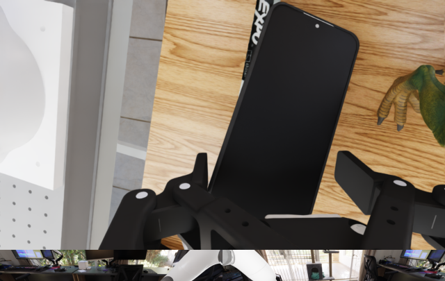
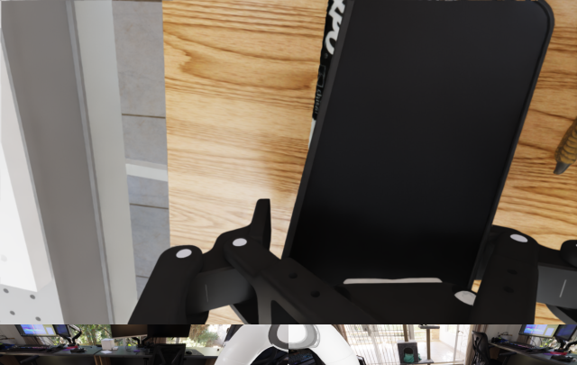
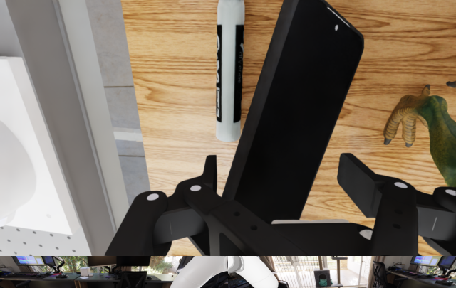

1
Pair native continuations
A · recipient
future FA



native action aA
B · donor
future FB



native action aB
Both branches are policy-generated and physically reachable. Their native actions define a direction; they are not candidate actions shown to the model.
 FAA
FAA